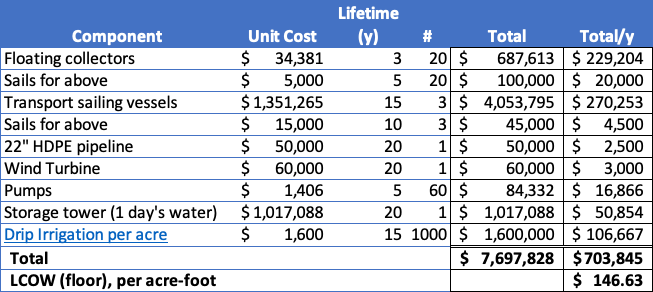

I apologize to at least some of my readers for the recent surge of math in this series. It’s a process of refining ideas by eliminating the mathematically implausible. Ultimately, engaging both creatively and analytically provides a reality check on the value of different approaches. And I’m not trying to publish a “breakthrough” manuscript in a prominent academic journal; I only want to see if there’s a valid destination for investigation and investment. I don’t need to get the model past an Editorial Board and gain nothing from unrealistic assumptions.
So far, we’ve established that collecting salt-free water in floating industrial-scale cisterns near the equator and delivering it to coastal desert areas for irrigation is not implausible from either a supply or timing perspective, and it can be accomplished with well-established technologies (primarily wind power) that add no carbon to the atmosphere. The innovation in this solution combines ancient intermittent energy sources with modern electronics, satellite communications, and autonomous (crewless) navigation to reduce costs and increase availability.
But what about taking a cost perspective? Can the system as a whole conceivably make a profit? Let’s take a shot at a techno-economic analysis of the proposal from the perspective of a potential return on investment:
Excluding non-recurring engineering costs, what would the material for this system cost, and how long might it last?
Taking carbon credits into account, what is the financial value of our hypothetical sugarcane crop?
Here’s the system:

The system is complete enough to create a bare-bones cost model. The levelized cost of water (the unit value of the water divided by the lifetime of the production equipment) will be determined by the cost and durability of the equipment because the product itself is free. The interconnections between system components are sketchy at this point, but we can estimate a bill of materials for major components to see if the system as a whole makes sense. There will be missing pieces, like the cost of engineering and satellite controllers, labor for installation, maintenance, fleet management, etc.1, so any estimate will be low. But, the system has a lot of hardware, so if the parts are too expensive, the math will never work out.
In developing the cost model, I’ve looked at public “off-the-shelf” equipment costs (where available) and then modeled costs of the oversized vessels as done previously, costs scaling with the volume raised to the 0.6 power:

The transport vessels are scaled aluminum rowboats, and the floating collectors were described earlier. I raised the number of collection vessels to 20 to ensure that some of them collect the needed amount of 400 acre-feet per month. I set the storage buffer to an entire day’s irrigation and scaled from a DIY water tower found online. I didn’t apply a scaling factor to the pumps because I couldn’t find a suitable piece of hardware, so I used 60 12VDC pumps, each with a capacity of 3,120 gallons per hour, to provide the necessary pumping capacity. This adds cost but has the virtues of redundancy as protection at a critical point and scalability based on wind velocity. The value for drip irrigation (US$1,600 per acre) is the average installed cost per acre in the US, so it’s probably high. As a starting point, let’s assume that the LCOW from the complete system will work out to be US$200 per acre-foot, or a total cost of US$1,000 per acre (AU$3,600 per hectare) per year to grow sugarcane in the desert.
The exercise suggests that even with off-the-shelf parts, water with value on the spot market (proposed earlier to be profitable below $200/acre-foot) is achievable through “atmospheric mining”. Further, it provides some insight into reducing the system cost. The vessels for collection and transport are, unsurprisingly, the most expensive components, followed by the drip irrigation system. Any choice that lowers costs or extends these components’ usable lifetime will reduce LCOW.
There are omitted costs, of course, but this water (despite being ‘free’ at least at the origin) is somewhat expensive as a sole source for agriculture. Farmers take free water delivered from the sky when available, then use flowing river water for irrigation. Only after those sources are exhausted will they pay a premium on the spot market (per the NQH2O index)2. In this instance, our notional farmers are far from a river in the desert, so they always pay a premium. The seasonal cost of water will therefore be higher. At the same time, it’s below-marginal barren land, and we’ve chosen a thirsty crop (albeit one with high carbon capture value), so costs will vary compared to other crops in other areas.
The Australian government published the financial performance of the nation’s sugarcane farms in 20213 and reported that the average cost (including irrigation) of growing was AU$2,380/hectare4 with a profit of AU$1,000. So, if nothing else changes (invoking the economist’s phrase ceteris paribus, Latin for ‘all else equal’) at this LCOW, planting sugarcane would be unprofitable—the water costs more than the profit. Factors such as land cost, fertilizer use, and labor (spraying for insects) may be lower with drip irrigation in this situation, and it’s close enough that further refinements might shed light on more cost savings.
Now, let’s consider the harvest. Drip-irrigated sugarcane requires 1,530 mm (roughly 5 feet) of water, evenly spread across the year.5 After yearly harvest, sugarcane grows back, like mown grass, for up to eight years. It has been successfully grown in the freshly irrigated desert with favorable results:
This marketing video suggests that yields under drip irrigation in the Senegal desert are about 50% higher than the best-performing Australian farms (150 vs. 94 tonnes/ha). That’s significant. If the higher yield holds in Australia, the increased profits from the system will swing toward profitability.
Now, what about carbon credits? I don’t know what Australia offers, but the American government has set a price of US$60 per ton of CO2. Let’s assume the sugar is removed and sold, and the remainder of the dry biomass is carbohydrate.
The composition of a harvested hectare (assuming 150 tonnes/ha) is about 102 tonnes of water and 22 tons of sucrose, with about 26 tons of other carbohydrates, or 38 tons of captured CO2, above ground, consistent with our earlier analysis.6 That leaves about 7 tons of CO2 captured as organic carbon in the soil, roughly equivalent to the amount measured in the freshly irrigated desert.7 If all of this carbon could be monetized, that’d be US$2,700 (AU$3,970), with a nominal harvest value of AU$1,500 (assuming the yield increase holds). This factor would make the operation profitable even under ceteris paribus. Notably, as this new approach progresses down the learning curve, it is plausible to survive the elimination of subsidies.
This seesawing of “Profitable or not?” highlights a problem with looking only at the “bottom line” in models. Whether an operation is projected to be profitable is naturally dependent on assumptions, and profit is a difference between big numbers. So even with plausible assumptions, there is an outsized impact of errors in assumptions. We’ve made quite a few here, and building it is the only sure way to see how far off we are in our assumptions. Ten million dollars is more than I can afford, but a relatively small investment from most “cleantech” or “impact” investors. And, unlike many unproven research projects, this one will work. The only unknown is whether it’ll pay back the investment, and no one has unleashed a crack engineering team, constrained by cost, on the problem.
So, the idea is still alive, despite yet another attempt to kill it.
Thank you for reading Healing the Earth with Technology. This post is public so feel free to share it.
I believe it’s appropriate to exclude the cost of capital. While any project at scale is capital intensive, I’m projecting that the social value of the operation will lead to subsidies or other forms of government support that reduce or eliminate capital costs. At this stage of model development, it will be a minor factor, anyway.
Topp, V, Litchfield, F, Coelli, R & Ashton, D 2021, Financial performance of sugarcane farms 2020–21 to 2021–22, ABARES, Canberra, December. https://doi.org/10.25814/czw3-ez74
Average cost breakdown based on the data provided in the above report (in AU$/ha):
Contracts, $496.99 (21%)
Fertilizer, $423.36 (18%)
Repairs/maintenance, $271.95 (11%)
Hired labor, $194.76 (8%)
Fuel, oil & grease, $158.54 (7%)
Chemicals, $107.47 (5%)
Electricity, $99.75 (4%)
Rates, $98.57 (4%)
Handling/Mktg, $95.60 (4%)
Water, $71.25 (3%)
Interest, $71.25 (3%)
Insurance, $41.56 (2%)
Land Rent, $33.25 (1%)
Administration, $30.28 (1%)
Motor Vehicles, $15.44 (1%)
Lease Payments, $6.53
Other, $162.69 (7%)
Marin et al., “Sugarcane evapotranspiration and irrigation requirements in tropical climates”, Theoretical and Applied Climatology https://doi.org/10.1007/s00704-020-03161-z